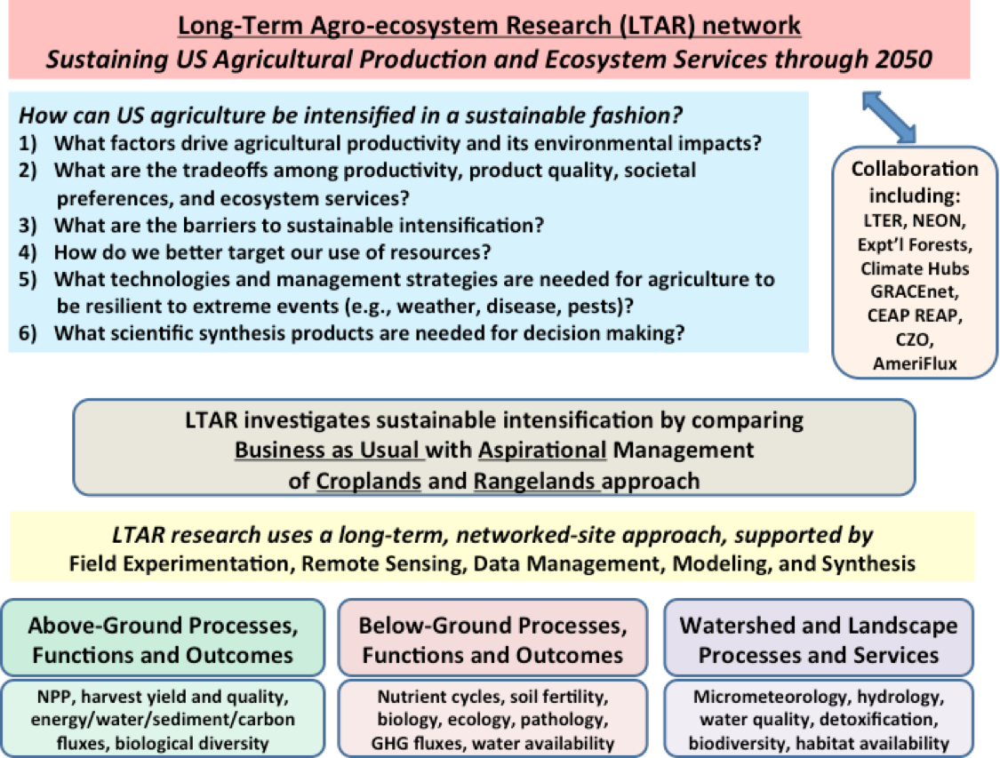

The Long-Term Agroecosystem Research (LTAR) Network is designed to address national issues related to agricultural production, sustainability, off-site effects, and socioeconomic impacts on rural communities as affected by climate. More on the LTAR science plan can be found in our Shared Research Strategy.
The Long-Term Agroecosystem Research (LTAR) Network is a partnership among 18 premier long-term research sites across the United States.
LTAR was established to build the knowledge required for sustainable intensification of agriculture, increasing yields from the current agricultural land base while minimizing or reversing agriculture’s adverse environmental impacts.
Network research is organized around topics of sustainability of regional or national consequence, relying upon long-term databases, cross-site experiments, and computational modeling to tie experimental and monitoring conclusions from diverse locations to a broader vision of agriculture for the United States.
Currently, most agricultural science in the United States focuses on improving productivity and efficiency. In contrast, the LTAR network has a multifaceted focus on satisfying increasing demand for agricultural commodities, protectingthe quality of the environment, and enhancing the quality of life in rural areas and the Nation as a whole.
The network is uniquely positioned to ensure sustained crop and livestock production and ecosystem services from the regional agroecosystems of the United States, and to leverage those local findings to support a national-scale transition to sustainable intensification.
LTAR will provide information to producers, and policymakers at the local, State, and national levels regarding how innovation, incentives, and regulations may impact economic opportunity and the health of agricultural communities and landscapes.
LTAR network research will be prioritized around the following questions related to sustainable intensification.
These concepts are incorporated in the following organizational chart:

| Common Experiment - Rangeland | ||
|---|---|---|
| Business as Usual System (BAU) Field-Scale Treatment |
Aspirational System (ASP) Field-Scale Treatment |
|
| Archbold Biological Station | ||
| Central Mississippi River Basin | NA | NA |
| Central Plains Experimental Range | ||
| Eastern Corn Belt | NA | NA |
| Great Basin | ||
| Gulf Atlantic Coastal Plain | NA | NA |
| Jornada Experimental Range | ||
| Kellogg Biological Station | NA | NA |
| Lower Chesapeake Bay | NA | NA |
| Lower Mississippi River Basin | NA | NA |
| Northern Plains | NA | NA |
| Platte River/High Plains Aquifer | NA | NA |
| R.J. Cook Agronomy Farm | ||
| Southern Plains | NA | NA |
| Texas Gulf | NA | NA |
| Upper Chesapeake Bay | NA | NA |
| Upper Mississippi River Basin | NA | NA |
| Walnut Gulch Experimental Watershed | Mesquite Treatment | |
| Common Experiment - Cropland | ||
|---|---|---|
| Business as Usual System (BAU) Field-Scale Treatment |
Aspirational System (ASP) Field-Scale Treatment |
|
| Archbold Biological Station | ||
| Central Mississippi River Basin | ||
| Central Plains Experimental Range | NA | NA |
| Eastern Corn Belt | ||
| Great Basin | NA | NA |
| Gulf Atlantic Coastal Plain | ||
| Jornada Experimental Range | NA | NA |
| Kellogg Biological Station | ||
| Lower Chesapeake Bay | ||
| Lower Mississippi River Basin | ||
| Northern Plains | ||
| Platte River/High Plains Aquifer | ||
| R.J. Cook Agronomy Farm | ||
| Southern Plains | ||
| Texas Gulf | ||
| Upper Chesapeake Bay | ||
| Upper Mississippi River Basin | ||
| Walnut Gulch Experimental Watershed | NA | NA |
| Biological | |||||||||
|---|---|---|---|---|---|---|---|---|---|
| ANPP | Food Production | Phenology | Plant tissue chemistry | Soil microbial abundance/diversity | Decomposition | Weed indicators | Biodiversity indicators | Remote sensing and LULC | |
| Archbold Biological Station | |||||||||
| Central Mississippi River Basin | |||||||||
| Central Plains Experimental Range | |||||||||
| Eastern Corn Belt | |||||||||
| Great Basin | |||||||||
| Gulf Atlantic Coastal Plain | |||||||||
| Jornada Experimental Range | |||||||||
| Kellogg Biological Station | |||||||||
| Lower Chesapeake Bay | |||||||||
| Lower Mississippi River Basin | |||||||||
| Northern Plains | |||||||||
| Platte River/High Plains Aquifer | |||||||||
| R.J. Cook Agronomy Farm | |||||||||
| Southern Plains | |||||||||
| Texas Gulf | |||||||||
| Upper Chesapeake Bay | |||||||||
| Upper Mississippi River Basin | |||||||||
| Walnut Gulch Experimental Watershed | |||||||||
| Eddy Flux CO2 | |||||
|---|---|---|---|---|---|
| Dataset 1 | Dataset 2 | Dataset 3 | Dataset 4 | Dataset 5 | |
| Archbold Biological Station | |||||
| Central Mississippi River Basin | |||||
| Central Plains Experimental Range | |||||
| Eastern Corn Belt | |||||
| Great Basin | |||||
| Gulf Atlantic Coastal Plain | |||||
| Jornada Experimental Range | |||||
| Kellogg Biological Station | |||||
| Lower Chesapeake Bay | |||||
| Lower Mississippi River Basin | |||||
| Northern Plains | |||||
| Platte River/High Plains Aquifer | |||||
| R.J. Cook Agronomy Farm | |||||
| Southern Plains | |||||
| Texas Gulf | |||||
| Upper Chesapeake Bay | |||||
| Upper Mississippi River Basin | |||||
| Walnut Gulch Experimental Watershed | |||||
| Hydrology | |||||||||||||
|---|---|---|---|---|---|---|---|---|---|---|---|---|---|
| Discharge | Surface Runoff | Subsurface Flow | Soil Moisture | Groundwater Level | Irrigation Inputs | Forms of N and P | Suspended Sediment | Selected Herbicides | Conductivity | Total Dissolved Solids | Chloride | ET | |
| Archbold Biological Station | |||||||||||||
| Central Mississippi River Basin | |||||||||||||
| Central Plains Experimental Range | |||||||||||||
| Eastern Corn Belt | |||||||||||||
| Great Basin | |||||||||||||
| Gulf Atlantic Coastal Plain | |||||||||||||
| Jornada Experimental Range | |||||||||||||
| Kellogg Biological Station | |||||||||||||
| Lower Chesapeake Bay | |||||||||||||
| Lower Mississippi River Basin | |||||||||||||
| Northern Plains | |||||||||||||
| Platte River/High Plains Aquifer | |||||||||||||
| R.J. Cook Agronomy Farm | |||||||||||||
| Southern Plains | |||||||||||||
| Texas Gulf | |||||||||||||
| Upper Chesapeake Bay | |||||||||||||
| Upper Mississippi River Basin | |||||||||||||
| Walnut Gulch Experimental Watershed | |||||||||||||
| Meteorology Phase I | Meteorology Phase II | ||||||
|---|---|---|---|---|---|---|---|
| Air temperature/ relative humidity | Wind speed and direction | Precipitation | Phenology camera | Barometric pressure | Short and long-wave radiation | (PAR) incoming | |
| Archbold Biological Station | |||||||
| Central Mississippi River Basin | |||||||
| Central Plains Experimental Range | |||||||
| Eastern Corn Belt | |||||||
| Great Basin | |||||||
| Gulf Atlantic Coastal Plain | |||||||
| Jornada Experimental Range | |||||||
| Kellogg Biological Station | |||||||
| Lower Chesapeake Bay | |||||||
| Lower Mississippi River Basin | |||||||
| Northern Plains | |||||||
| Platte River/High Plains Aquifer | |||||||
| R.J. Cook Agronomy Farm | |||||||
| Southern Plains | |||||||
| Texas Gulf | |||||||
| Upper Chesapeake Bay | |||||||
| Upper Mississippi River Basin | |||||||
| Walnut Gulch Experimental Watershed | |||||||
| Non-CO2 Gases | ||||||
|---|---|---|---|---|---|---|
| N2O | CH4 | NH3 | NO2 | N2 | VOC | |
| Archbold Biological Station | ||||||
| Central Mississippi River Basin | ||||||
| Central Plains Experimental Range | ||||||
| Eastern Corn Belt | ||||||
| Great Basin | ||||||
| Gulf Atlantic Coastal Plain | ||||||
| Jornada Experimental Range | ||||||
| Kellogg Biological Station | ||||||
| Lower Chesapeake Bay | ||||||
| Lower Mississippi River Basin | ||||||
| Northern Plains | ||||||
| Platte River/High Plains Aquifer | ||||||
| R.J. Cook Agronomy Farm | ||||||
| Southern Plains | ||||||
| Texas Gulf | ||||||
| Upper Chesapeake Bay | ||||||
| Upper Mississippi River Basin | ||||||
| Walnut Gulch Experimental Watershed | ||||||
| Soils | |||||||||
|---|---|---|---|---|---|---|---|---|---|
| Soil Morphology | Texture | Bulk Density | pH | EC | Exchangable Cations and CEC | Total C and N | Total and Water Extractable P | ||
| Archbold Biological Station | |||||||||
| Central Mississippi River Basin | |||||||||
| Central Plains Experimental Range | |||||||||
| Eastern Corn Belt | |||||||||
| Great Basin | |||||||||
| Gulf Atlantic Coastal Plain | |||||||||
| Jornada Experimental Range | |||||||||
| Kellogg Biological Station | |||||||||
| Lower Chesapeake Bay | |||||||||
| Lower Mississippi River Basin | |||||||||
| Northern Plains | |||||||||
| Platte River/High Plains Aquifer | |||||||||
| R.J. Cook Agronomy Farm | |||||||||
| Southern Plains | |||||||||
| Texas Gulf | |||||||||
| Upper Chesapeake Bay | |||||||||
| Upper Mississippi River Basin | |||||||||
| Walnut Gulch Experimental Watershed | |||||||||
| Wind Erosion | |||||
|---|---|---|---|---|---|
| Dataset 1 | Dataset 2 | Dataset 3 | Dataset 4 | Dataset 5 | |
| Archbold Biological Station | |||||
| Central Mississippi River Basin | |||||
| Central Plains Experimental Range | |||||
| Eastern Corn Belt | |||||
| Great Basin | |||||
| Gulf Atlantic Coastal Plain | |||||
| Jornada Experimental Range | |||||
| Kellogg Biological Station | |||||
| Lower Chesapeake Bay | |||||
| Lower Mississippi River Basin | |||||
| Northern Plains | |||||
| Platte River/High Plains Aquifer | |||||
| R.J. Cook Agronomy Farm | |||||
| Southern Plains | |||||
| Texas Gulf | |||||
| Upper Chesapeake Bay | |||||
| Upper Mississippi River Basin | |||||
| Walnut Gulch Experimental Watershed | |||||
| Remote Sensing | |||||
|---|---|---|---|---|---|
| Multi-Spectral Imagery | Aerial Photography | Precipitation | Dataset 4 | Dataset 5 | |
| Archbold Biological Station | |||||
| Central Mississippi River Basin | |||||
| Central Plains Experimental Range | |||||
| Eastern Corn Belt | |||||
| Great Basin | |||||
| Gulf Atlantic Coastal Plain | |||||
| Jornada Experimental Range | |||||
| Kellogg Biological Station | |||||
| Lower Chesapeake Bay | |||||
| Lower Mississippi River Basin | |||||
| Northern Plains | |||||
| Platte River/High Plains Aquifer | |||||
| R.J. Cook Agronomy Farm | |||||
| Southern Plains | |||||
| Texas Gulf | |||||
| Upper Chesapeake Bay | |||||
| Upper Mississippi River Basin | |||||
| Walnut Gulch Experimental Watershed | |||||
| Data Management | ||||
|---|---|---|---|---|
| Raw Data | Meta Data | QA/QC Data | Phenocam Data | |
| Archbold Biological Station | ||||
| Central Mississippi River Basin | ||||
| Central Plains Experimental Range | ||||
| Eastern Corn Belt | ||||
| Great Basin | ||||
| Gulf Atlantic Coastal Plain | ||||
| Jornada Experimental Range | ||||
| Kellogg Biological Station | ||||
| Lower Chesapeake Bay | ||||
| Lower Mississippi River Basin | ||||
| Northern Plains | ||||
| Platte River/High Plains Aquifer | ||||
| R.J. Cook Agronomy Farm | ||||
| Southern Plains | ||||
| Texas Gulf | ||||
| Upper Chesapeake Bay | ||||
| Upper Mississippi River Basin | ||||
| Walnut Gulch Experimental Watershed | ||||
| GIS Datasets | |||||||
|---|---|---|---|---|---|---|---|
| Watershed Boundaries | Elevation | Soils | Hydrology | Land Cover | Geology | Socio-Economic | |
| Archbold Biological Station | |||||||
| Central Mississippi River Basin | |||||||
| Central Plains Experimental Range | |||||||
| Eastern Corn Belt | |||||||
| Great Basin | |||||||
| Gulf Atlantic Coastal Plain | |||||||
| Jornada Experimental Range | |||||||
| Kellogg Biological Station | |||||||
| Lower Chesapeake Bay | |||||||
| Lower Mississippi River Basin | |||||||
| Northern Plains | |||||||
| Platte River/High Plains Aquifer | |||||||
| R.J. Cook Agronomy Farm | |||||||
| Southern Plains | |||||||
| Texas Gulf | |||||||
| Upper Chesapeake Bay | |||||||
| Upper Mississippi River Basin | |||||||
| Walnut Gulch Experimental Watershed | |||||||
RFI resulting in the initial selection of Central Plains Experimental Station, Goodwater Creek Experimental Watershed, Jornada Experimental Range, Little River Experimental Watershed, Little Washita River/Fort Cobb Reservoir Experimental Watersheds, Northern Great Plains Research Laboratory, R.J. Cook Agronomy Farm, Upper Chesapeake Bay Experimental Watersheds, Upper Mississippi River Basin Experimental Watersheds, Walnut Gulch Experimental Watershed as LTAR sites.
2nd RFI resulting in the selection of Archbold-University of Florida, Eastern Corn Belt, Great Basin, Michigan State University WK Kellogg Biological Station, Lower Chesapeake Bay, Lower Mississippi River Basin, Platte River-High Plains Aquifer, Texas Gulf Research Partnership.
G. Philip Robertson, Vivien G. Allen, George Boody, Emery R. Boose, Nancy G. Creamer, Laurie E.
Drinkwater, James R. Gosz, Lori Lynch, John L. Havlin, Louise E. Jackson, Steward T. A. Pickett,
Louis Pitelka, Alan Randall, A. Scott Reed, Timothy R. Seastedt, Robert B. Waide, And Diana H.
Wall. 2008. Long-term Agricultural Research: A Research, Education, and Extension Imperative
BioScience, Vol. 58 No. 7.
http://bioscience.oxfordjournals.org/content/58/7/640.full
Mark R. Walbridge and Steven R. Shafer. 2011. A Long-Term Agro-Ecosystem Research (LTAR) Network for Agriculture,
The Fourth Interagency Conference on Research in the Watersheds, 26–30 September 2011, Fairbanks, AK.
https://www.ars.usda.gov/ARSUserFiles/np211/LTAR%20Walbridge%20and%20Shafer%202011%20Paper.pdf
Jean L. Steiner, Timothy Strickland, Peter J.A. Kleinman, Kris Havstad, Thomas B. Moorman, M. Susan Moran, Phil Heilman, Ray B. Bryant,
David Huggins, and Greg McCarty. 2016. The Long Term Agroecosystem Research Network – Shared Research Strategy. p. 42-51. Proceedings of the Fifth
Interagency Conference on Research in the Watersheds in Stringer, Christina E.; Krauss, Ken W.; Latimer, James S., eds. 2016. Headwaters to estuaries:
advances in watershed science and management—Proceedings of the Fifth Interagency Conference on Research in the Watersheds. March 2-5, 2015, North Charleston, S
outh Carolina. e-Gen. Tech. Rep. SRS-211. Asheville, NC: U.S. Department of Agriculture Forest Service, Southern Research Station. 302 p.
http://www.srs.fs.usda.gov/pubs/gtr/gtr_srs211/gtr_srs211_014.pdf
Sadler, E. J., K. A. Sudduth, S. T. Drummond, E. D. Vories, and P. E. Guinan. 2015. Long-Term Agroecosystem Research in the Central Mississippi River Basin: Goodwater Creek Experimental Watershed Weather Data. J. Environ. Qual. 44:13-17. doi:10.2134/jeq2013.12.0515
https://dl.sciencesocieties.org/publications/jeq/pdfs/44/1/13
Nicholas P. Webb , Jeffrey E. Herrick, Justin W. Van Zee, Ericha M. Courtright, Christopher H. Hugenholtz, Ted M. Zobeck, Gregory S.
Okin, Thomas E. Barchyn, Benjamin J. Billings, Robert Boyd, Scott D. Clingan, Brad F. Cooper, Michael C. Duniway, Justin D. Derner, Fred A. Fox, Kris M.
Havstad a , Philip Heilman, Valerie LaPlante, Noel A. Ludwig, Loretta J. Metz, Mark A. Nearing, M. Lee Norfleet, Frederick B. Pierson, Matt A. Sanderson,
Brenton S. Sharratt, Jean L. Steiner, John Tatarko, Negussie H. Tedela, David Toledo, Robert S. Unnasch, R. Scott Van Pelt, Larry Wagner. 2016. The National
Wind Erosion Research Network: Building a standardized long-term data resource for aeolian research, modeling and land management. Aeolian Research 22 (2016) 23–36.
http://www.nrcs.usda.gov/Internet/FSE_DOCUMENTS/nrcseprd1101806.pdf
| ARS Experimental Watersheds and Range LTAR Sites | |||||||||
|---|---|---|---|---|---|---|---|---|---|
| Site Name | Site Code | Location | Established | Record (years) | Area (km2) | Network Affiliation | NEON Domain | Major crops, land use, and livestock production | Bibliographies |
| Archbold Biological Station | Archbold | Venus, FL/Ona, FL | 1941 | 74 | 102 | AmeriFlux, GLEON, NutNet, USCRN | D3 - Southeast | Beef cattle, pasture, rangeland, wildlife | Short Bibliography
Long Bibliography |
| Central Mississippi River Basin | CMRB | Columbia, MO | 1971 | Up to 44 | 490 | CEAP, SCAN | D6 - Prairie Peninsula | Grain cropping systems, some pasture, riparian forest | Long Bibliography |
| Central Plains Experimental Range | CPER | Cheyenne, WY; Nunn, CO | 1939 | 76 | 865 | LTER, NEON, GRACEnet, NADP, NutNet, SCAN | D10 - Central Plains | Wheat-fallow, rangeland, beef cattle | Long Bibliography |
| Eastern Corn Belt | Columbus, OH | 1974 | Up to 41 | N/A | CEAP, GRACEnet | D7 - Appalachians / Cumberland Plateau | Cropland, swine, dairy poultry | Short Bibliography
Long Bibliography |
|
| Great Basin | GB | Boise, ID | 1961 | 54 | 239 | CEAP, CZO, NADP, SCAN | D15 - Great Basin | Rangeland, beef cattle, wildlife | Short and Long Bibliographies |
| Gulf Atlantic Coastal Plain | GACP | Tifton, Georgia; (Little River Experimental Watershed) | 1965 | 47 | 334 | CEAP, NADP, SCAN | D3 - Southeast | Cotton, peanuts, corn, vegetables (~50% irrigated); poultry, beef cattle | Short and Long Bibliographies |
| Jornada Experimental Range | JER | Las Cruces, NM | 1912 | 100+ | 780 | CEAP, COSMOS, LTER, NEON, NWERN, SCAN, UV-B MRP, USCRN, WNBR | D14 - Desert Southwest | Rangeland, beef cattle, wildlife | Short Bibliography
Long Bibliography |
| Kellogg Biological Station | KBS | Hickory Corners, MI | 1987 | 28 | 13 | LTER, AmeriFlux, NADP, NutNet | D5 - Great Lakes | Row crops, forage crops, bioenergy crops, mixed grasses, prairie, forest, dairy | Short Bibliography
Long Bibliography |
| Lower Chesapeake Bay | Beltsville, MD | 1910 | 22 | 2600 | CASTnet, CEAP, COSMOS, EOS, NADP, GRACEnet, SCAN, UV-B MRP | D2 - Mid Atlantic | Cropland, poultry, dairy, forages, pasture, horticulture | Short Bibliography
Long Bibliography |
|
| Lower Mississippi River Basin | Oxford, MS | 1981 | Up to 34 | 21.3 | COSMOS, CEAP, SURFRAD, SCAN | D8 - Ozarks Complex | Cotton, corn, soybeans, rice, catfish, sugar cane | Long Bibliography | |
| Northern Plains | NP | Mandan, ND | 1912 | 100+ | 9.7 | NEON, CEAP, GRACEnet, REAP, SCAN | D9 - Northern Plains | Small grains, row crops, beef cattle on grazing lands | Short and Long Bibliographies |
| Platte River/High Plains Aquifer | Lincoln, NE | 1912 | 100+ | 16500 | AmeriFlux, GRACEnet, REAP, SCAN | D6 - Prairie Peninsula | Cropland, rangeland, beef cattle, biofuels | Short Bibliography
Long Bibliography |
|
| R.J. Cook Agronomy Farm | Pullman, WA | 1999 | 15 | 0.57 | 7 LTAP, GRACEnet, REAP, NADP, SCAN | D15 - Great Basin | Wheat, barley, pulses (peas, lentils, chickpeas) | Short Bibliography
Long Bibliography |
|
| Southern Plains | SP | El Reno, OK | 1948,1961 | 54 | 1,423 | CEAP, COSMOS, SCAN | D11 - Southern Plains | Beef cattle, winter wheat, pasture, forages, prairie | Short Bibliography
Long Bibliography |
| Texas Gulf | TGC | Temple, TX | 1937 | 76 | N/A | CEAP, GRACEnet, NutNet, LTBE, SCAN | D11 - Southern Plains | Cropland, rangeland, pasture, remnant prairie | Long Bibliography |
| Upper Chesapeake Bay | University Park, PA | 1968 | 47 | 1,127 | CEAP, GRACEnet, SCAN | D2 - Mid Atlantic | Row crops, dairy, pasture, forest | Short Bibliography | |
| Upper Mississippi River Basin | UMRB | Ames, IA | 1992 | 23 | 6,200 | AmeriFlux, CEAP, GRACEnet, SCAN | D6 - Prairie Peninsula | Corn-soybean with livestock (swine, beef, dairy) | Short and Long Bibliographies |
| Walnut Gulch Experimental Watershed | WGEW | Tucson,AZ | 1953 | 62 | 150 | Ameriflux, CEAP, COSMOS, EOS, GRACEnet, SCAN | D14 - Desert Southwest | Rangeland, beef cattle, wildlife | Short Bibliography |